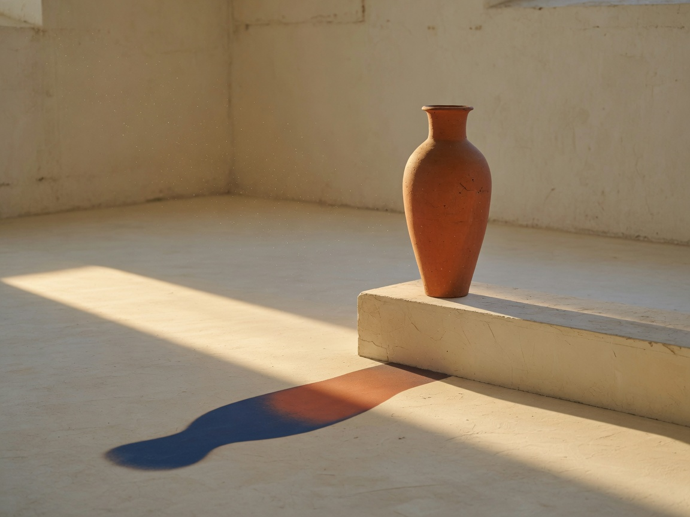
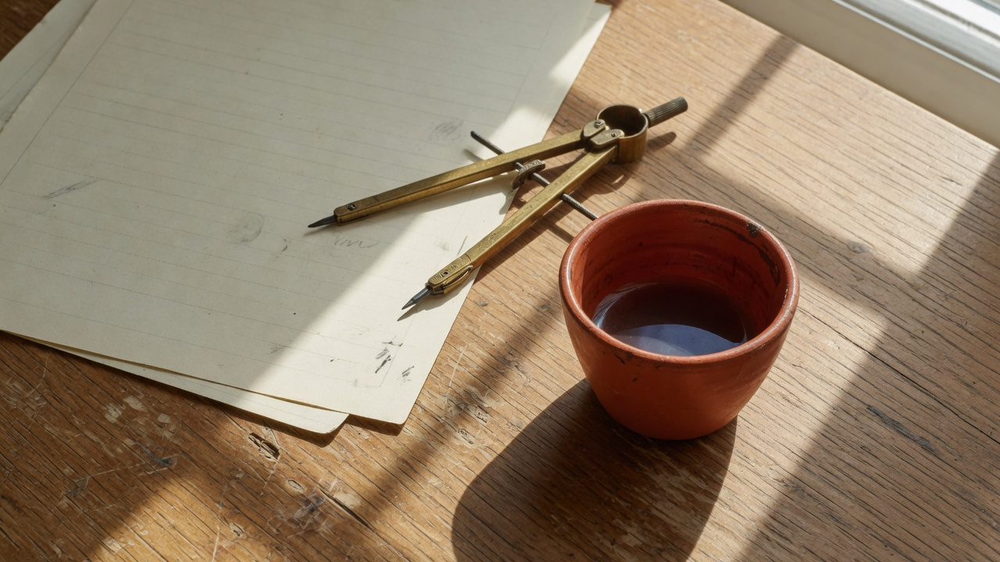

Oregon City
People call me RJ

The room.
I have been in the people business my whole life. A suit and a door at five. A new school every year after that. The rooms changed. The work never did.
The wolf is fed by its legs. The problem was never the power. It was the cable.
I do not sell a teammate. I offer a man a way to keep his own — and still pick up the phone.

The table.
If you want the long paper — Sun-to-Token, version 3.2 — it lives at the DOI: